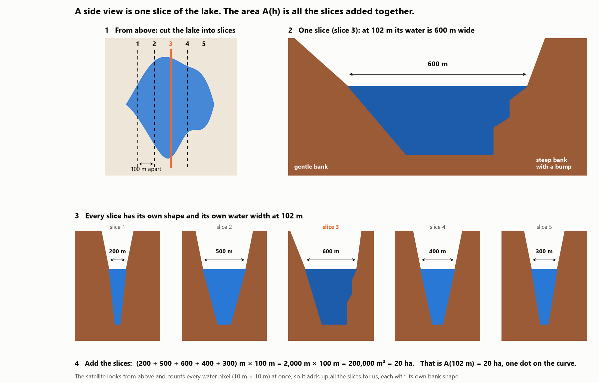

Step by step
How we count the water, step by step
One example tank near Mahakanadarawa, from satellite days to cubic metres. The days are real: they are the days each satellite really gave data over Mahakanadarawa in 2026. The heights and areas in the example are made-up round numbers, so the sums stay easy to follow. Real measured dots are further down.
Where each number comes from
Two things to measure: the height and the area
SWOT: the height
Measures how high the water stands, to about 10 cm. Over our tanks it passes twice every 21 days: 6 days apart, then 14.
Sentinel-2: a photo
Shows the water's area with 10 m pixels, but only when the sky is clear: about once a month here.
Sentinel-1: radar
Shows the water's area through cloud, every 12 days.
NISAR: radar
Shows the water's area through cloud, and better under water plants. Twice every 12 days, since June 2026.
At the five big reservoirs, the Irrigation Department's gauge also gives the height every day.
Step 1
Collect dots: a height and an area for the same day
A dot is one day when we know both the water's height and its area. Below are the real days with data from January to August 2026. Five of them became our dots.
Days with data over Mahakanadarawa, January to August 2026
Each line is one day. SWOT: usable passes. Sentinel-2: clear photos only. The numbered days are our five dots.
When the map and the SWOT pass fall on different days, we read the height from a straight line between the SWOT passes before and after. Example: SWOT measured 103 m 20 cm on 24 February and 102 m 50 cm on 10 March, so the water fell 5 cm a day, and on 28 February it stood at 103 m.
Example values: the days and the satellites are real, but these heights and areas are made-up round numbers. Real measured dots are in the "Real data" section below.
| Dot | Day (real) | Height (example) | Height from | Area (example) | Area from |
|---|---|---|---|---|---|
| 1 | 13 Jan 2026 | 104 m | SWOT, same day | 32 ha | Sentinel-1 radar |
| 2 | 28 Feb 2026 | 103 m | SWOT, between 24 Feb and 10 Mar | 24 ha | Sentinel-2 photo |
| 3 | 25 Mar 2026 | 102 m | SWOT, between 16 Mar and 6 Apr | 20 ha | Sentinel-2 photo |
| 4 | 29 Jun 2026 | 101 m | SWOT, same day | 14 ha | NISAR radar |
| 5 | 24 Aug 2026 | 100 m | SWOT, same day | 10 ha | Sentinel-1 radar |
Step 2
Join the dots: the function A(h)
Put the dots on a chart of height against area and join them. That line is the function A(h): put in a height, get the water's area at that height. Between two dots, the line assumes the bank changes evenly.
Where one area comes from
A side view of a tank is one slice of the lake. The area at a height adds up every slice, each with its own bank shape. The satellite does this for us by counting water pixels from above.

The dots and the function A(h)
Each dot shows its day and where its area came from. Every height came from SWOT. Reading the line: A(102 m) = 20 ha.
- Area from a Sentinel-2 photo
- Area from Sentinel-1 radar
- Area from NISAR radar
Step 3
Integrate: cut the water into layers and add them up
Between 13 January (104 m) and 24 August (100 m) the water fell 4 m. Cut those 4 m into layers. Each layer is the average of its two areas × its thickness. Adding the layers up is the integral of A(h): V = ∫ A(h) dh.
The water between the two days, as four layers
1 ha × 1 m = 10,000 m³.
| Layer | Heights | Areas | The sum | Water |
|---|---|---|---|---|
| d | 103 to 104 m | 24 and 32 ha | (24 + 32) ÷ 2 = 28 ha, × 1 m | 280,000 m³ |
| c | 102 to 103 m | 20 and 24 ha | (20 + 24) ÷ 2 = 22 ha, × 1 m | 220,000 m³ |
| b | 101 to 102 m | 14 and 20 ha | (14 + 20) ÷ 2 = 17 ha, × 1 m | 170,000 m³ |
| a | 100 to 101 m | 10 and 14 ha | (10 + 14) ÷ 2 = 12 ha, × 1 m | 120,000 m³ |
| Total | a + b + c + d | 790,000 m³ |
The integration, written out
Between two dots the line is straight, so in each layer A(h) is a simple formula. Let x be the height above the bottom of the layer, from 0 to 1 m.
| Layer | A(h) in this layer (ha) | The integral over 1 m | Water |
|---|---|---|---|
| a: 100 to 101 m | A = 10 + 4x | ∫₀¹ (10 + 4x) dx = 10 + 2 = 12 ha·m | 120,000 m³ |
| b: 101 to 102 m | A = 14 + 6x | ∫₀¹ (14 + 6x) dx = 14 + 3 = 17 ha·m | 170,000 m³ |
| c: 102 to 103 m | A = 20 + 4x | ∫₀¹ (20 + 4x) dx = 20 + 2 = 22 ha·m | 220,000 m³ |
| d: 103 to 104 m | A = 24 + 8x | ∫₀¹ (24 + 8x) dx = 24 + 4 = 28 ha·m | 280,000 m³ |
| All four | ∫ A(h) dh from 100 to 104 m = 12 + 17 + 22 + 28 = 79 ha·m | 790,000 m³ |
How layer a works: the integral of 10 + 4x is 10x + 2x². At x = 1 that is 10 + 2 = 12, and at x = 0 it is 0, so the layer holds 12 ha·m. That is the same as the average area, (10 + 14) ÷ 2 = 12 ha, times 1 m: for a straight line, the integral and the average give the same answer. 1 ha·m = 10,000 m³. With real data the computer does the same over a fitted curve, in layers 1 cm thick.
Water used between 13 January and 24 August: about 790,000 m³.
Real dots sit much closer together than 1 m: Mahakanadarawa has 85 SWOT passes over 5 m of height. So real layers are thinner, and the sum works in exactly the same way.
Example 2
When the water goes up and down
Same tank, same layers a, b, c and d. This time the water does not just fall: rain in May lifts it again before it falls to the end. The days are real SWOT pass days in 2026; the heights are made-up round numbers.
The water's height from January to August
Each fall or rise crosses some of the layers. A fall sends that water out; a rise brings water in.
| From | To | Height | Layers crossed | Water |
|---|---|---|---|---|
| 13 Jan | 21 Apr | 104 m to 101 m: fell 3 m | d + c + b = 280,000 + 220,000 + 170,000 | 670,000 m³ out |
| 21 Apr | 18 May | 101 m to 102 m: rose 1 m (rain) | b = 170,000 | 170,000 m³ in |
| 18 May | 24 Aug | 102 m to 100 m: fell 2 m | b + a = 170,000 + 120,000 | 290,000 m³ out |
Net change
670,000 − 170,000 + 290,000 = 790,000 m³
The same as Example 1: only the start and end heights decide it, whatever happens in between.
Water that went out
670,000 + 290,000 = 960,000 m³
More than the net change, because the rain put 170,000 m³ back in between.
To catch every rise and fall, we work out the volume on every dot day and add up the falls and the rises separately. That is why frequent picture days matter.
Real data
Real dots from Mahakanadarawa
These are real measurements, not examples: SWOT's height and the water counted in a clear Sentinel-2 photo. Since 2024, nine photos had almost no cloud over the tank.
| Photo day | SWOT height | Height from | Water in the photo | Area from |
|---|---|---|---|---|
| 10 Mar 2024 | 94 m 79 cm | SWOT, same day | 1,113 ha | Sentinel-2 photo |
| 20 Mar 2024 | 94 m 64 cm | SWOT, between 16 Mar and 31 Mar | 897 ha | Sentinel-2 photo |
| 30 Mar 2025 | 95 m 40 cm | SWOT, between 27 Mar and 10 Apr | 899 ha | Sentinel-2 photo |
| 9 May 2025 | 95 m 69 cm | SWOT, between 8 May and 22 May | 1,097 ha | Sentinel-2 photo |
| 28 Jul 2025 | 93 m 62 cm | SWOT, between 9 Jul and 30 Jul | 1,012 ha | Sentinel-2 photo |
| 30 Jul 2025 | 93 m 58 cm | SWOT, same day | 989 ha | Sentinel-2 photo |
| 22 Aug 2025 | 93 m 35 cm | SWOT, between 20 Aug and 3 Sep | 958 ha | Sentinel-2 photo |
| 31 Oct 2025 | 91 m 45 cm | SWOT, between 21 Oct and 5 Nov | 578 ha | Sentinel-2 photo |
| 28 Feb 2026 | 95 m 60 cm | SWOT, between 24 Feb and 10 Mar | 1,144 ha | Sentinel-2 photo |
- Heights: SWOT on the same day, or read from the straight line between the SWOT passes before and after the photo.
- Areas: inside the tank's outline, every 10 m pixel that is brighter in green light than in infrared counts as water.
- Not perfect yet: on 20 March 2024 and 30 March 2025 the photos show less water than on days when the water stood lower. Grass and water plants hide water at the shallow edges. That is why the project trains an AI water model with a "water under plants" class and adds radar.
Step 4
How sure are we?
- Safe limits: the area can only grow as the water rises, so the water must lie between the bottom areas × 1 m and the top areas × 1 m. Here that is between 680,000 and 900,000 m³, and our 790,000 sits in between.
- Five big reservoirs: we compare our number with the Irrigation Department's daily storage records.
- Tanks without a gauge: we give our number together with its safe limits.
A real test: Mahakanadarawa, Yala 2026
SWOT measured 95 m 22 cm on 16 March and 93 m 13 cm on 30 August 2026. Using SWOT's own water areas for the dots, the sum gives 22 to 24 million m³. The department's daily records say 25 million m³.
The gap comes from the areas. On 10 March 2024, SWOT's own area was 705 ha, but a clear Sentinel-2 photo taken the same day showed 1,113 ha of water. That is why the project builds better water maps from Sentinel-1, Sentinel-2 and NISAR.